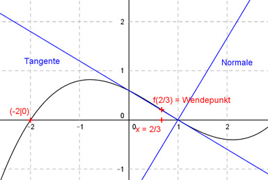

Aufgabe 30 Der Graph einer ganzrationalen Funktion 3. Grades hat bei x = 2/3 einen Wendepunkt, schneidet an der Stelle x = -2 die x-Achse, und die Normale f(x) = (5/3)x - 5/3 schneidet ihn an der Stelle x = 1. Wie lautet seine Funktionsgleichung?  Allgemeine Form einer ganzrationalen Funktion 3. Grades: f(x) = ax3 + bx2 + cx + d f’(x) = 3ax2 + 2bx + c f’’(x) = 6ax + 2b 4 Bedingungen: 1. Hat bei x = 2/3 einen Wendepunkt bedeutet: f’’(2/3) = 0 --> 6a * 2/3 + 2b = 0 --> 4a + 2b = 0 I 2. Schneidet an der Stelle x = -2 die x-Achse bedeutet: f(-2) = 0 --> a * (-2)3 + b * (-2)2 + c * (-2) + d = 0 --> -8a + 4b - 2c + d = 0 II 3. Die Normale f(x) = (5/3)x - 5/3 schneidet ihn an der Stelle x = 1 bedeutet: f(1) = 5/3 * 1 - 5/3 = 0 --> Der Punkt (1|0) liegt auf dem Graphen: f(1) = 0 --> a * 13 + b * 12 + c * 1 + d = 0 --> a + b + c + d = 0 III 4. Die Normale hat eine Steigung von 5/3. Es gilt: Steigung der Normale mN * Steigung der Tangente mT = -1 5/3 * mT = -1 | *3 5 * mT = -3 | :5 mT = -3/5 = -0,6 Tangentensteigung mT = -0,6 an der Stelle x = 1 bedeutet: f’1 = -0,6 --> 3a * 12 - 2b * 1 + c = -0,6 --> 3a + 2b + c = - 0,6 IV III * (-1) + II -a - b - c - d = 0 -8a + 4b - 2c + d = 0 ----------------------- -9a + 3b - 3c = 0 V IV * 3 + V 9a + 6b + 3c = -1,8 -9a + 3b - 3c = 0 ------------------- 9b = -1,8 |:9 b = -0,2 b = -0,2 in I eingesetzt: 4a + 2 * (-0,2) = 0 4a - 0,4 = 0 |+0,4 4a = 0,4 :4 a = 0,1 a = 0,1 und b = -0,2 in IV eingesetzt: 3 * 0,1 + 2 * (-0,2) + c = -0,6 0,3 - 0,4 + c = -0,6 -0,1 + c = -0,6 |+0,1 c = -0,5 a = 0,1 und b = -0,2 und c = -0,5 in III eingesetzt. 0,1 - 0,2 - 0,5 + d = 0 -0,6 + d = 0 |+0,6 d = 0,6 Gesuchte Funktionsgleichung: f(x) = 0,1x3 - 0,2x2 - 0,5x + 0,6